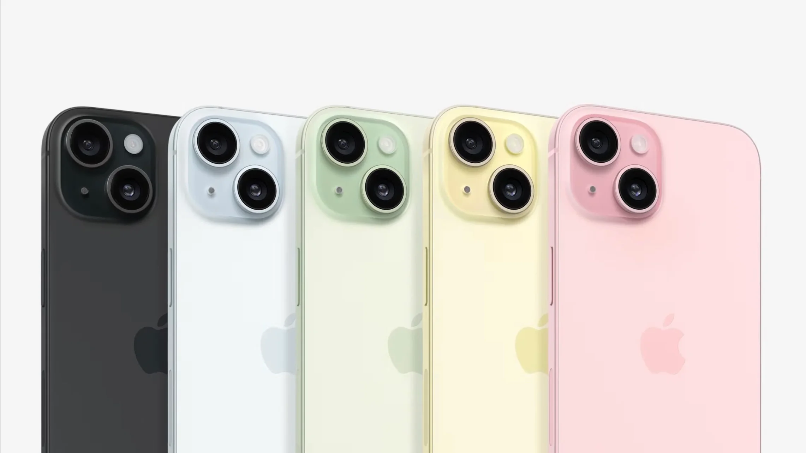

- зміст статі
- iPhone 15 і 15 Plus
- iPhone 15 Pro і 15 Pro Max
- зовнішній вигляд
- оглад камер
- огляд потужностей та заліза
- Ціни на смартфони
- захист "екології" та нові чохли
iPhone 15 і 15 Plus
Обидві моделі отримали функцію Dynamic Island і камеру на 48 МП для високоякісних фотографій.
iPhone 15 і iPhone 15 Plus доступні в п'яти нових кольорах: рожевому, жовтому, зеленому, синьому та чорному. Замовлення розпочнуться 15 вересня, а продажі — 22 вересня.

Завдяки супутниковій інфраструктурі Apple користувачі можуть зв'язатися зі службою Roadside Assistance у разі аварії далеко від міста. iPhone 15 та iPhone 15 Plus також пропонують USB-C, бездротову зарядку MagSafe, функцію Precision Finding для пошуку друзів та безліч інших функцій.
Обидва смартфони мають дисплеї розміром 6,1 та 6,7 дюйма з Super Retina XDR. Вперше у смартфоні колір проникає на всю задню скляну панель, створюючи п'ять гарних відтінків. Пристрої також мають покращену міцність і автономність - Apple обіцяє, що гаджет проживе цілий день.
iPhone 15 Pro и 15 Pro Max
Обидва смартфони виконані з титану і оснащені кнопкою дії, що настроюється, на бічній панелі. Гаджети працюють на базі нового процесора A17 Pro. Apple відзначила, що це найпотужніший iPhone, який будь-коли створювала. iPhone 15 Pro та iPhone 15 Pro Max будуть доступні у чотирьох нових оздобленнях: чорний титан, білий титан, синій титан та натуральний титан. Замовлення розпочнуться у п'ятницю, 15 вересня, а продажі стартують 22 вересня.
Смартфони отримали більш просунуту 48МП основну камеру, яка тепер підтримує нову надвисоку роздільну здатність 24МП. Також представлені нові портретні режими, покращення в режимі нічної зйомки, Smart HDR, а також нова 5-кратна телекамера виключно для iPhone 15 Pro Max.
Также Apple представила более продвинутую камеру для iPhone 15 Pro и iPhone 15 Pro Max. Как заявляет Apple, портреты нового поколения на iPhone 15 Pro и iPhone 15 Pro Max обеспечивают более чёткие детали, яркие цвета и лучшее качество съёмки при слабом освещении. Отмечается, что теперь пользователи могут делать портреты без переключения в режим «Портрет». Дополнительные функции камеры включают улучшенный ночной режим, новый Smart HDR и лучшее качество видео благодаря A17 Pro.
Ціни на смартфони:
- iPhone 15 — від $799
- iPhone 15 Plus — від $899
- iPhone 15 Pro — від $999
- iPhone 15 Pro Max — від $1200